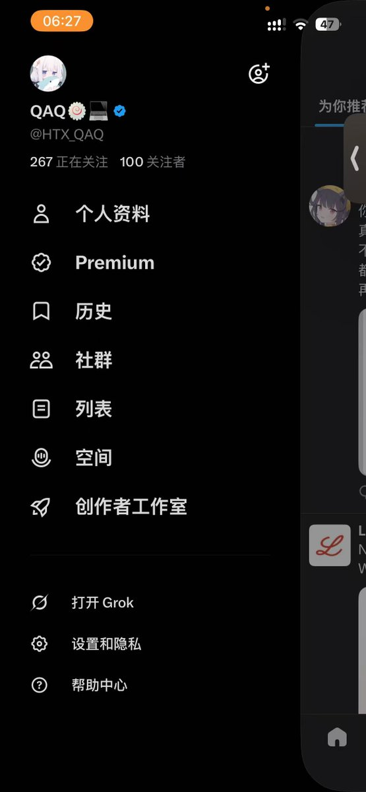

困困鱼崽仔小云🏳️⚧️🍥
@kunkunyuzaizai
RT @HTX_QAQ: 100fo🥰纪念抽奖 突破100fo我也是剧烈高兴啊。 为了感谢各位的陪伴 抽个奖吧
一等奖1份： 60t/15mg 合计右美沙芬 DXM（外板单方）
二等奖3份：20000mg pr80（CAS 号 148553-50-8 原粉）
三等奖5份：1…

QAQ🍥💻
@HTX_QAQ
100fo🥰纪念抽奖 突破100fo我也是剧烈高兴啊。 为了感谢各位的陪伴 抽个奖吧
一等奖1份： 60t/15mg 合计右美沙芬 DXM（外板单方）
二等奖3份：20000mg pr80（CAS 号 148553-50-8 原粉）
三等奖5份：10cny支付宝口令红包
参与方式： 必须转发 关注 点赞 评论留言（没有转发的不算在内） https://t.co/4ao3TOeIN7